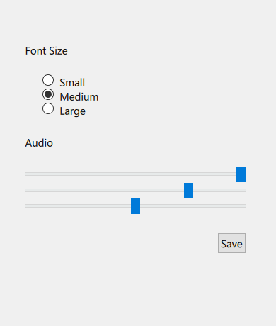

Windows Style
The Windows style is a style that looks native on Windows. More...
| Import Statement: | import QtQuick.Controls.Windows |
| Since: | Qt 6.0 |
The Windows style is a style that looks native on Windows. The controls are drawn run-time using native libraries, and is therefore only available for applications running on Windows.
Note: Be aware that the apperance of this style can change from one minor Qt version to the next, to better blend in with native applications on the platform.
 The Windows style |
To run an application with the Windows style, see Using Styles in Qt Quick Controls.
Current state
The Windows style is under development, and some controls are not yet supported. Those controls are: BusyIndicator, DelayButton, PageIndicator, RangeSlider, Switch, TabBar and Tumbler. Those will fall back to use the Fusion Style.
Customization
The goal of the Windows style is to for the controls look and feel as similar as possible to the native controls on Windows. The style will follow the theme and colors configured globally from Windows Settings, and does not come with a separate customization API on top of that.
Note: The Windows style is not suitable for customizing. The main reason is that it sometimes draw both the contents and the background onto a single background item, which will not look good together with a custom contentItem. It also tends to use padding and inset values that are different from the other styles. It is instead recommended to always base a customized control on top of a single style that is available on all platforms, e.g Basic Style, Fusion Style, Imagine Style, Material Style, Universal Style. By doing so, you are guaranteed that it will always look the same, regardless of which style the application is run with. For example:
import QtQuick.Controls.Basic as Basic Basic.SpinBox { background: Rectangle { /* ... */ } }
See also Styling Qt Quick Controls